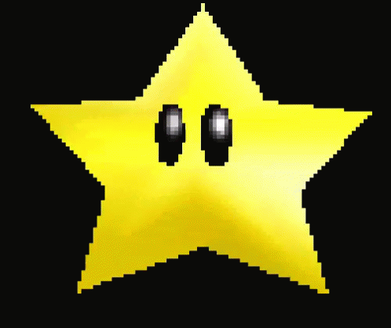

OBS! Friendly reminder!
Alla Mickes egna antaganden kring/om Johanna, Johanna + Micke = Oss, samt Micke själv
är om så sker i negativ benämning totalt felaktiga!
Micke ska komma ihåg att Johanna älskar honom "röd emoji hjärta" och att han aldrig
gjort eller komma kunna göra något fel/taskigt/elakt/sårande mot henne eller mot de som par.
Så allt som Lars-Åke eller annan specifik inre personlighet som inte är Johannas Micke
försöker överala honom om undanbedjes eftersom det är helt missvisande.
Dra alltid slutsatsen att det som antas i dessa lägen är i verkligheten det totala motsatta.
Detta gäller tills Micke åter är med Johanna då eventuellt följer nya instruktioner.
